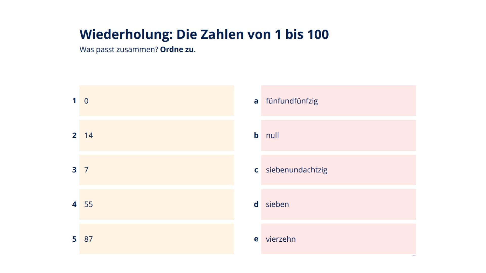
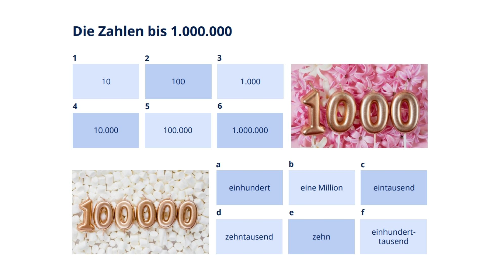
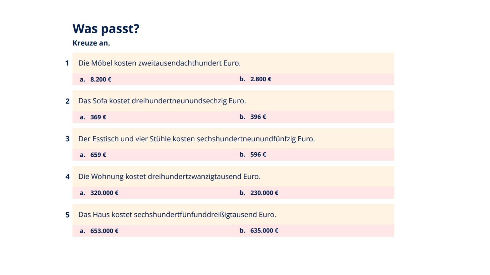
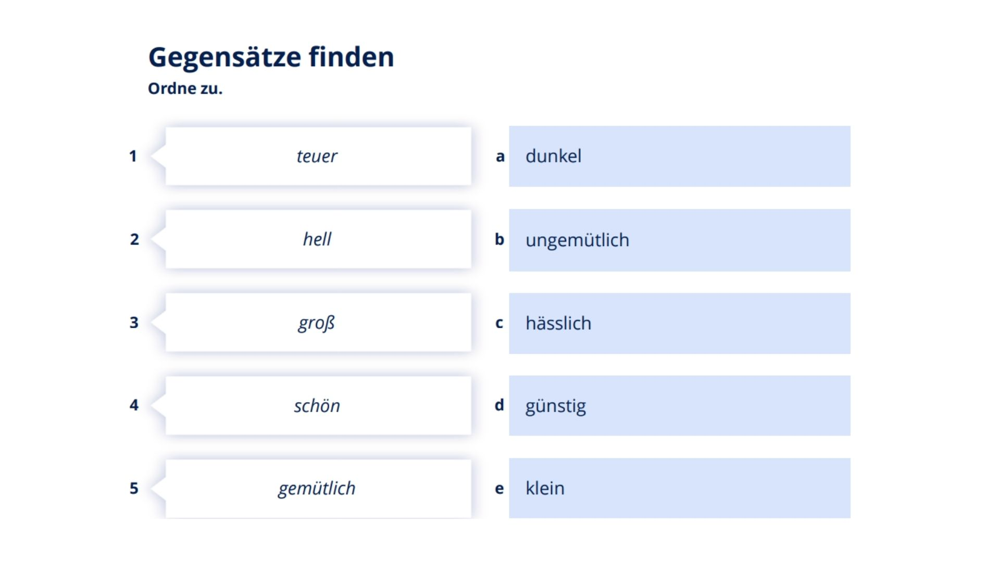
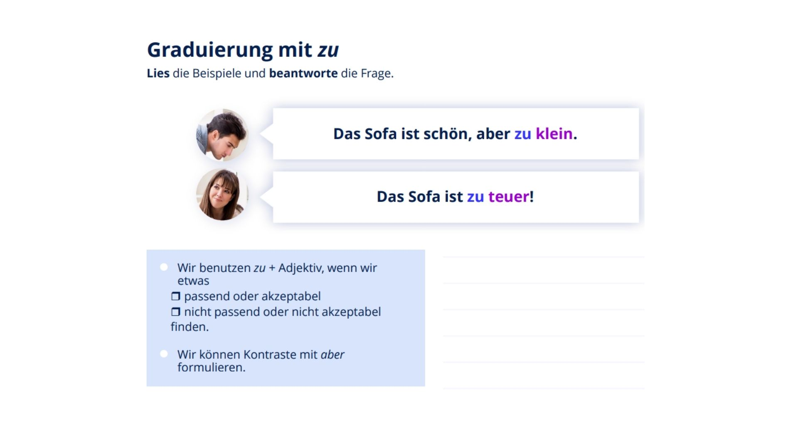
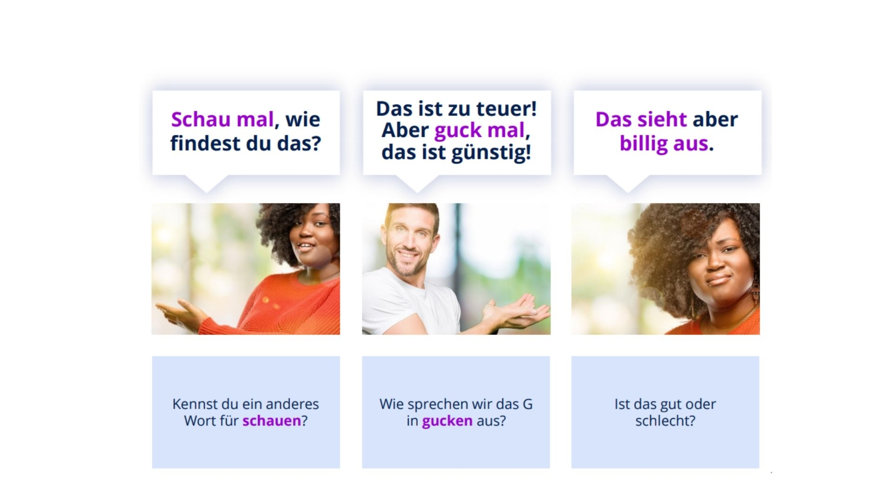
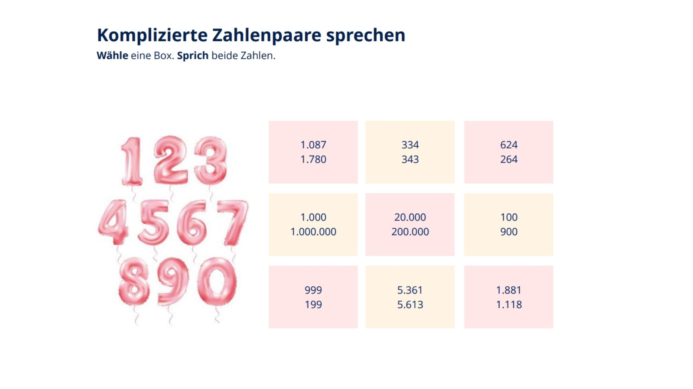

Lektion 2: Mobilyalar, Sıfatlar ve Fiyatlar
Eğitmen: **Esra DOĞAN ÜNAL**
Bu ödev, mobilyaları sıfatlarla tanımlama ve fiyatlar hakkında konuşma becerilerini pekiştirmeye odaklanmıştır.
Slayt 3'e göre sayıları Almanca karşılıklarıyla eşleştirin (1-5'e göre a-e).
Slayt 6'ya göre büyük sayıları Almanca karşılıklarıyla eşleştirin (1-6'ya göre a-f).
Görseldeki Almanca yazılan fiyatları rakamla (€) olarak yazın.
Görseldeki sıfatların zıt anlamlılarını bularak eşleştirin (1-5'e göre a-e).
Görseldeki kurala göre, **zu** + Sıfat yapısını ne zaman kullandığımızı açıklayın (Kendi cümlenizle Almanca veya Türkçe).
Slayt 5'teki konuşma ifadelerini inceleyin. **Schauen** kelimesi yerine kullanabileceğiniz diğer bir kelime nedir? Bu kelimeyi (Gucken) kullanarak iki ayrı cümle kurun.
Kendi odanızdan veya bir katalogdan 3 farklı mobilya (Örn: Tisch, Bett, Lampe) seçin. Her mobilyayı sıfatlar (**hell, dunkel, bequem, teuer, günstig**) ve `zu` yapısını kullanarak **en az 3 cümle** ile detaylıca tanımlayın. Toplam **en az 9 cümle** yazın.
Slayt 9'daki karmaşık sayı çiftlerinden (Komplizierte Zahlenpaare) iki farklı kutu seçin. Seçtiğiniz kutulardaki iki sayıyı da Almanca olarak yüksek sesle okuyun (Örn: 1.087 ve 1.780).
(Örn: Ich wähle die erste Box: Eintausendachtzig und Eintausendsiebenhundertachtzig.)
Slayt 10'daki mobilyalardan (veya önceki derslerdeki mobilyalardan) 3 tane seçin. Bu mobilyaları sıfatlar kullanarak ve `aber` (ama) bağlacını kullanarak karşılaştırmalı olarak anlatın. (Örn: Der Schrank ist schön, aber zu teuer.)